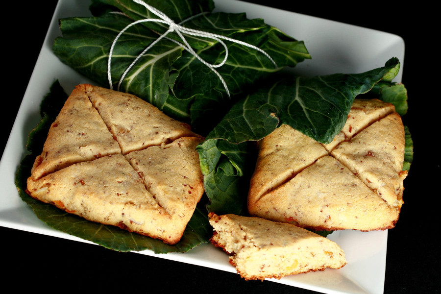

Lembas Bread

Description
Lembas bread. That's right, the fabled bread made by the immortal elves is not a legend despite what
most people may believe. A staple food of the elven cuisine, this bread manages to be incredible sweet
and delicious despite the simplicity of its ingredients. And yet this is no mere bread for a single
bite would suffice to saciate us mortals for several days. Whether you want to stuff those pesky relatives
during an annoying visit, elevate your meals to a whole different level, or have enough rations to a star
a journey across the entire continent, lembas bread is the best choice.
Ingredients
- 3 eggs
- 1 cups of honey
- 3 kumquats, whole
- 2 tablespoons orange flower or rose water
- 3 ounces of chopped almonds
- 1⁄4 cup of melted butter
- 2 1⁄4 cups of barley flour
- 1⁄2 tablespoon of salt
- 3 collard greeens
Steps
- Put the eggs, butter, honey, kumquats, rose or orange flower water, and nuts in a food processor or blender. Blend on high for 2-4 minutes.
- Add 1 cup of the flour. Blend for a minute or two.
- Put the mixture into a bowl and add the remaining flour and the salt. Whisk or stir until well blended.
- Bake a small amount of dough (about two tablespoons) at a time on an iron until lightly brown, for a flat bread like texture.
- They can also be baked at 350 degrees for about 10-15 minutes.
- Wrap in a collard green and tie with a string.